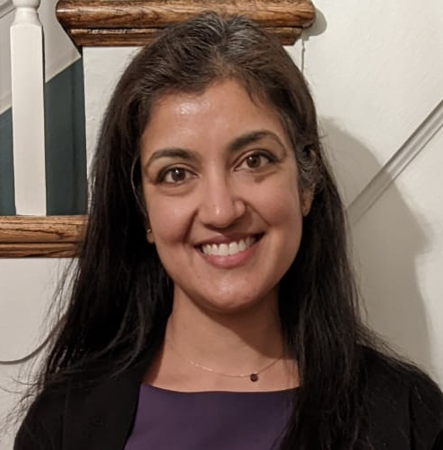

Hello! I'm Eena Kapoor,
Pediatric Physical Therapist.
With over 21 years of experience in pediatric physical therapy, I specialize in helping children reach their full potential through compassionate, evidence-based care. My work spans outpatient clinics, hospital-based care, community programs, and supporting patients with a wide range of developmental, orthopedic, and complex medical conditions.

How I can help
Throughout my career, I have worked with medically complex pediatric populations, including those with neurological, orthopedic, cardiopulmonary, and developmental conditions. I am passionate about collaborative care, working closely with families and multidisciplinary teams to create individualized, functional treatment plans.
I am available for telehealth (video, phone, email) consultations and in-home care.
Common conditions I treat:
- Developmental disorders & early intervention
- Neurological & orthopedic rehabilitation
- Cystic fibrosis care
- Hemophilia & bleeding disorders
- Post neonatal intensive care (NICU) support
- Sports & functional movement training
- Musculoskeletal ultrasound & point-of-care assessment
- Torticollis (head tilt)
- Plagiocephaly (flat head syndrome)
- Low muscle tone/hypotonia
- Muscle weakness
- Posture issues
- Delayed gross motor skills
- Prematurity
- Toe walking
- Balance problems
- Core weakness
- Tight heel cords
- Coordination Issues
- Running, jumping or skipping difficulties
- Motor planning/motor control
- Fall risk
- Difficulties with participation or not keeping up with peers
- Delayed ball handling skills - catch, throw, kick
Additionally, I treat a variety of other complex conditions including cancer rehab, traumatic brain injuries and genetic disorders.
Testimonials
I honestly cannot say enough about Eena! I met Eena when my twin B was just getting out of the NICU after almost a year. My twin B had multiple surgeries on his tummy & tummy time just wasn’t happening. Both were still on oxygen & were only operating on their backs. Eena is very patient. Even when he didn’t come ready. Even when he cried his way through the sessions (or even fell asleep) she was patient. We were consistent. She worked with him weekly for a year & a half until he started pre-k3. Because of Eena he is crawling, have correct posture, & walking unassisted. Without Eena we wouldn’t have such a mobile (and super active) little one.
- Selena H.
Eena has been a steady and reassuring presence throughout our physical therapy journey. She brings deep knowledge and extensive experience in treating pediatric patients, and she genuinely cares about each child’s development—always championing their success. She quickly built a trusting relationship with my son, and he lights up when he sees her. Because of that bond, along with her creativity, she is able to design and guide him through exercises that are both engaging and motivating—even for a stubborn 15-month-old. Even on days when he is grumpy or tired, I know he will have a meaningful and productive session. His progress has been amazing! I would absolutely recommend Eena to any parent looking for a thoughtful, dedicated pediatric PT.
- Bridget C.
Eena took great care of our baby's torticollis issue. Eena focuses on evidence based standards while simultaneously creating an engaging and stimulating environment. We are grateful for her care and highly recommend her to others!
- Pree S.
About
Experience
Staff Physical Therapist
Moco Movement Center | Kensington, MD (2022–2026)
- Performed comprehensive evaluations and develop individualized treatment plans
- Treated orthopedic, neurological, and developmental pediatric populations
- Collaborated with multidisciplinary therapy teams
- Mentored clinicians and contributed to team-based care models
Physical Therapist III
Children’s National Medical Center | Washington, DC (2006–2022)
- Provided inpatient and outpatient care in a Level-1 pediatric trauma center
- Treated a wide range of conditions including neonatal, neurological, orthopedic, cardiopulmonary, oncology, and post-surgical cases
- Supervised and mentored doctoral-level physical therapy students
- Led staff education and presented on specialized topics such as cystic fibrosis and bleeding disorders
- Developed and implemented programs, including an aquatic therapy initiative
- Participated in interdisciplinary rounds and protocol development
Education
Columbia University - Master's & Doctorate in Physical Therapy
Certifications & Training
- Licensed Physical Therapist (MD, DC, VA)
- CPR & AED Certified
- Neonatal Touch & Massage Certification
- DIR/Floortime Training
- Musculoskeletal Ultrasound (Pediatric Focus)
- Extensive continuing education in pediatric, neurological, and developmental care
Languages Fluent in:
- English
- Spanish
- Hindi
- Urdu
Leadership, Research & Advocacy
I have been actively involved in advancing physical therapy practice through leadership roles, research participation, and advocacy work.
- Physical Therapy Representative - Mid-Atlantic Hemophilia Treatment Centers
- Board Member - Hemophilia Association of the Capital Area
- Member - National Hemophilia Foundation Physical Therapy Working Group
- Clinical researcher in multicenter trials for hemophilia treatments and gene therapy
- Contributor to best practice protocols and multidisciplinary care models
Speaking & Education
I am an experienced speaker and educator, presenting at national and international conferences on topics including:
- Physical therapy in cystic fibrosis
- Exercise and safety in bleeding disorders
- Pediatric rehabilitation techniques
- Developmentally supportive care in the NICU
- I have also led educational programs for healthcare professionals, students, and families, helping translate complex medical concepts into practical, actionable care strategies.
Pricing & Insurance
All sessions are one-on-one and tailored specifically to you, with no overlap in care. This allows me to provide a level of attention and customization that is often not possible in traditional, insurance-based settings.
Initial Evalution: $375
Follow-up Sessions: $200
Payment is due at the time of service.
While I do not bill insurance directly, I am happy to provide a detailed receipt (superbill) that you can submit to your insurance provider for potential out-of-network reimbursement.
Will my insurance reimburse me?
Many plans offer out-of-network benefits. I recommend contacting your provider to understand your specific coverage. I am happy to provide the documentation you’ll need.
Why don’t you accept insurance?
By operating outside of insurance, I am able to spend more time with you, avoid unnecessary restrictions, and focus entirely on your goals and results.
Contact
I want to make receiving physical therapy convenient and minimize the stress to families by providing care in your home. Having your child in their familiar and comfortable environment can lead to better treatment outcomes.
Reach out to me if you're wondering if your child needs physical therapy or to setup an appointment!